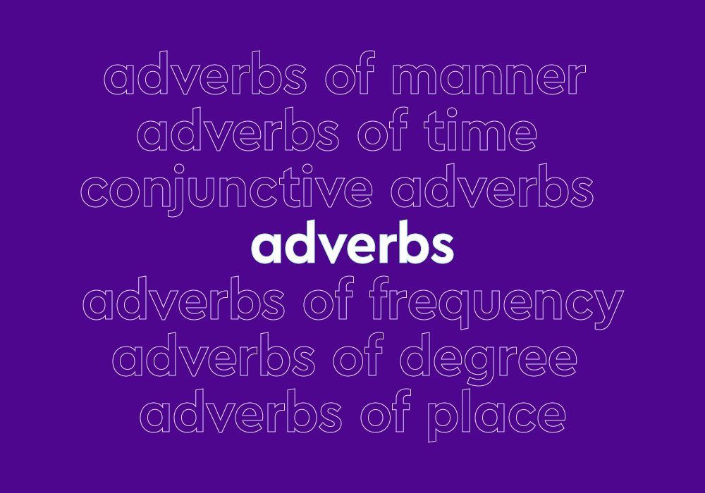

Lesson 3: Adverbs
Jump to Subtopic?
>📘What Is An Adverb?
An adverb is a word that is used to change, modify or qualify several types of words including an adjective, a verb, a clause, another adverb, or any other type of word or phrase, with the exception of determiners and adjectives, that directly modify nouns.
>📙Types of Adverbs (In the general order of adverbs)
- Adverbs of manner
- Adverbs of place
- Adverbs of frequency
- Adverbs of time
- Adverbs of purpose
>📙 Adverb of manner
An adverb of manner will explain how an action is carried out.
Very often adverbs of manner are adjectives with -ly added to the end,
but this is certainly not always the case.
| Example: | She passed the exam easily. |
| Example: | They walked quickly to catch the train. |
| Example: | The dinner party went badly. |
>📙 Adverbs of place
adverb of place, sometimes called spatial adverbs, will help explain where an action happens.
| Example: | New York is located = north of Philadelphia. |
| Example: | They traveled down the mountainside. |
| Example: | First, I looked here, and then I looked there, but I can’t find them anywhere |
>📙 Adverbs of frequency
Adverbs of frequency are used to express time or how often something occurs.
| Example: | The adverb isusually placed before the main verb. |
| Example: | I can normally make the shot. |
| Example: | I will always love |
>📙 Adverbs of time
adverbs of time, while seemingly similar to adverbs of frequency, tell us when something happens. Adverbs of time are usually placed at the end of a sentence.
| Example: | Harvey forgot his lunch yesterdayyesterdayand againtoday . |
| Example: | I have to go now. |
| Example: | We first met Julie last year |
>📙 Adverbs of purpose
of purpose, sometimes called adverbs of reason, help to describe why something happened.
| Example: | I was sick, thus didn’t go to work today. |
| Example: | I started jogging so that I wouldn’t be late. |
| Example: | Because I was late, I jogged a little faster. |